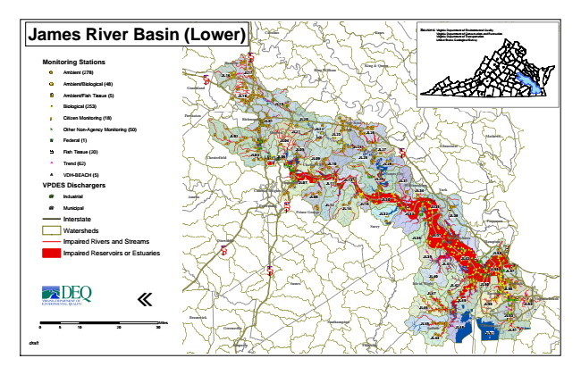

James River Basin (Lower)
Monitoring Stations
Ambient (278)
Ambient/Biological (48)
Ambient/Fish Tissue (5)
#* Biological (253)
kj Citizen Monitoring (18)
k Other Non-Agency Monitoring (50)
XW Federal (1)
Fish Tissue (20)
^ Trend (62)
!A VDH-BEACH (5)
VPDES Dischargers
A@ Industrial
A@ Municipal
Interstate
Watersheds
Impaired Rivers and Streams
Impaired Reservoirs or Estuaries
«
0 5
10 20 30 Sources: Virginia Department of Environmental Quality Virginia Department of Conservation and Recreation Virginia Department of Transportation United States Geological Survey
draft
Miles
Northumberland Louisa
Caroline
Essex
Hanover
§ ̈¦ 95
Lancaster King & Queen § ̈¦ 64
JL16
JL17
King William
Goochland
Middlesex JL18
JL19
Powhatan
Richmond
JL01
JL20
New Kent
JL02
Henrico
JL21
JL22
JL23
JL26
Mathews JL04
JL05
Chesterfield
JL03
JL06
JL09
JL24
JL27
JL25
§ ̈¦ 64
James City
Amelia
Poquoson
Emporia
Franklin Gloucester Charles City
JL10
JL28
Hopewell
JL07
JL11
JL13
JL29
JL31
Williamsburg Colonial Heights
JL34
York
JL08
Petersburg
§ ̈¦ 295
JL12
Prince George
JL14
JL30 JL15
JL35
JL32
JL33
JL38
Surry
Dinwiddie
JL36
JL37
JL43 JL41
JL57 JL40
Sussex
JL42
JL50
Norfolk JL56 JL47
Portsmouth
JL49
Virginia Beach
JL46
JL55
Brunswick
JL53 Southampton
Greensville
Suffolk
JL48
Chesapeake
JL52
JL51
JL44
Newport News § ̈¦ 85
Hampton
JL39
JL58
§ ̈¦ 95
JL59
Isle of Wight
JL54
JL45